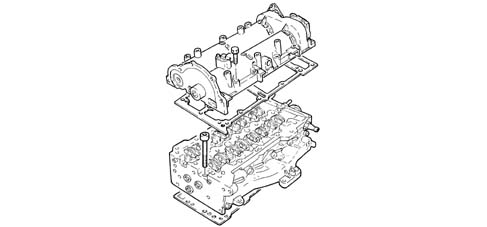

1016E cylinder head/s - various operations
- Path
- Descriptions > 10 ENGINE > 1016 CYLINDER HEAD/S > 1016E cylinder head/s - various operations
- Kind
- system description
- Applies to
- all engines; all production periods
- Interactive page
- https://sloeber94.github.io/elrnDB-fDbl/en/#/2582295
Applies to: all engines; all production periods
The cylinder head is of the monolithic type, of aluminium-silicon alloy.
Two cast iron camshafts, in a camshaft housing; driven by chain and sprockets.
The four valves per cylinder, parallel and vertical, are positioned in the valve guides and operated by rockers controlled by camshaft cams kept in contact with the valves by means of hydraulic tappets.
The valve guides are installed by interference fit in their seats in the cylinder head. The bore is finished off after assembly, using a specific reamer.
Compared with heads with precombustion chambers, the entire combustion process takes place in the combustion chamber in the piston.
The cylinder head gasket is of the multilayer metal type, and there is no need to retighten the cylinder head at all during the life of the engine.
